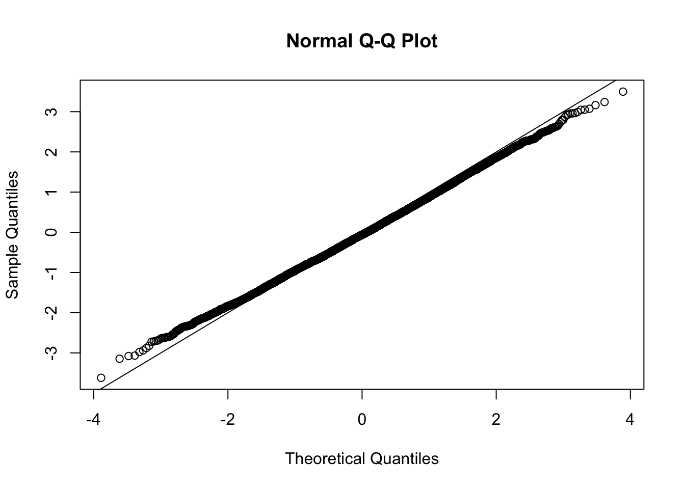

Voom on null data - multiple examples
M Stephens
2016-10-21
Last updated: 2018-05-15
workflowr checks: (Click a bullet for more information)-
✔ R Markdown file: up-to-date
Great! Since the R Markdown file has been committed to the Git repository, you know the exact version of the code that produced these results.
-
✔ Environment: empty
Great job! The global environment was empty. Objects defined in the global environment can affect the analysis in your R Markdown file in unknown ways. For reproduciblity it’s best to always run the code in an empty environment.
-
✔ Seed:
set.seed(12345)The command
set.seed(12345)was run prior to running the code in the R Markdown file. Setting a seed ensures that any results that rely on randomness, e.g. subsampling or permutations, are reproducible. -
✔ Session information: recorded
Great job! Recording the operating system, R version, and package versions is critical for reproducibility.
-
Great! You are using Git for version control. Tracking code development and connecting the code version to the results is critical for reproducibility. The version displayed above was the version of the Git repository at the time these results were generated.✔ Repository version: 388e65e
Note that you need to be careful to ensure that all relevant files for the analysis have been committed to Git prior to generating the results (you can usewflow_publishorwflow_git_commit). workflowr only checks the R Markdown file, but you know if there are other scripts or data files that it depends on. Below is the status of the Git repository when the results were generated:
Note that any generated files, e.g. HTML, png, CSS, etc., are not included in this status report because it is ok for generated content to have uncommitted changes.Ignored files: Ignored: .DS_Store Ignored: .Rhistory Ignored: .Rproj.user/ Ignored: analysis/.DS_Store Ignored: analysis/BH_robustness_cache/ Ignored: analysis/FDR_Null_cache/ Ignored: analysis/FDR_null_betahat_cache/ Ignored: analysis/Rmosek_cache/ Ignored: analysis/StepDown_cache/ Ignored: analysis/alternative2_cache/ Ignored: analysis/alternative_cache/ Ignored: analysis/ash_gd_cache/ Ignored: analysis/average_cor_gtex_2_cache/ Ignored: analysis/average_cor_gtex_cache/ Ignored: analysis/brca_cache/ Ignored: analysis/cash_deconv_cache/ Ignored: analysis/cash_fdr_1_cache/ Ignored: analysis/cash_fdr_2_cache/ Ignored: analysis/cash_fdr_3_cache/ Ignored: analysis/cash_fdr_4_cache/ Ignored: analysis/cash_fdr_5_cache/ Ignored: analysis/cash_fdr_6_cache/ Ignored: analysis/cash_plots_cache/ Ignored: analysis/cash_sim_1_cache/ Ignored: analysis/cash_sim_2_cache/ Ignored: analysis/cash_sim_3_cache/ Ignored: analysis/cash_sim_4_cache/ Ignored: analysis/cash_sim_5_cache/ Ignored: analysis/cash_sim_6_cache/ Ignored: analysis/cash_sim_7_cache/ Ignored: analysis/correlated_z_2_cache/ Ignored: analysis/correlated_z_3_cache/ Ignored: analysis/correlated_z_cache/ Ignored: analysis/create_null_cache/ Ignored: analysis/cutoff_null_cache/ Ignored: analysis/design_matrix_2_cache/ Ignored: analysis/design_matrix_cache/ Ignored: analysis/diagnostic_ash_cache/ Ignored: analysis/diagnostic_correlated_z_2_cache/ Ignored: analysis/diagnostic_correlated_z_3_cache/ Ignored: analysis/diagnostic_correlated_z_cache/ Ignored: analysis/diagnostic_plot_2_cache/ Ignored: analysis/diagnostic_plot_cache/ Ignored: analysis/efron_leukemia_cache/ Ignored: analysis/fitting_normal_cache/ Ignored: analysis/gaussian_derivatives_2_cache/ Ignored: analysis/gaussian_derivatives_3_cache/ Ignored: analysis/gaussian_derivatives_4_cache/ Ignored: analysis/gaussian_derivatives_5_cache/ Ignored: analysis/gaussian_derivatives_cache/ Ignored: analysis/gd-ash_cache/ Ignored: analysis/gd_delta_cache/ Ignored: analysis/gd_lik_2_cache/ Ignored: analysis/gd_lik_cache/ Ignored: analysis/gd_w_cache/ Ignored: analysis/knockoff_10_cache/ Ignored: analysis/knockoff_2_cache/ Ignored: analysis/knockoff_3_cache/ Ignored: analysis/knockoff_4_cache/ Ignored: analysis/knockoff_5_cache/ Ignored: analysis/knockoff_6_cache/ Ignored: analysis/knockoff_7_cache/ Ignored: analysis/knockoff_8_cache/ Ignored: analysis/knockoff_9_cache/ Ignored: analysis/knockoff_cache/ Ignored: analysis/knockoff_var_cache/ Ignored: analysis/marginal_z_alternative_cache/ Ignored: analysis/marginal_z_cache/ Ignored: analysis/mosek_reg_2_cache/ Ignored: analysis/mosek_reg_4_cache/ Ignored: analysis/mosek_reg_5_cache/ Ignored: analysis/mosek_reg_6_cache/ Ignored: analysis/mosek_reg_cache/ Ignored: analysis/pihat0_null_cache/ Ignored: analysis/plot_diagnostic_cache/ Ignored: analysis/poster_obayes17_cache/ Ignored: analysis/real_data_simulation_2_cache/ Ignored: analysis/real_data_simulation_3_cache/ Ignored: analysis/real_data_simulation_4_cache/ Ignored: analysis/real_data_simulation_5_cache/ Ignored: analysis/real_data_simulation_cache/ Ignored: analysis/rmosek_primal_dual_2_cache/ Ignored: analysis/rmosek_primal_dual_cache/ Ignored: analysis/seqgendiff_cache/ Ignored: analysis/simulated_correlated_null_2_cache/ Ignored: analysis/simulated_correlated_null_3_cache/ Ignored: analysis/simulated_correlated_null_cache/ Ignored: analysis/simulation_real_se_2_cache/ Ignored: analysis/simulation_real_se_cache/ Ignored: analysis/smemo_2_cache/ Ignored: data/LSI/ Ignored: docs/.DS_Store Ignored: docs/figure/.DS_Store Ignored: output/fig/
Expand here to see past versions:
| File | Version | Author | Date | Message |
|---|---|---|---|---|
| html | 1b3ff05 | LSun | 2018-05-12 | Build site. |
| Rmd | ac438b4 | LSun | 2018-05-12 | Update to 1.0 |
| html | ac438b4 | LSun | 2018-05-12 | Update to 1.0 |
| Rmd | cc0ab83 | Lei Sun | 2018-05-11 | update |
| html | 0f36d99 | LSun | 2017-12-21 | Build site. |
| html | 853a484 | LSun | 2017-11-07 | Build site. |
| html | 59fd661 | LSun | 2017-02-03 | Build site. |
| html | 36c1e4c | LSun | 2017-02-03 | Build site. |
| html | d616c3d | LSun | 2017-02-03 | occurrence |
| html | c21d808 | LSun | 2017-02-02 | Build site. |
| Rmd | 858f0e4 | LSun | 2017-02-01 | background |
| html | 858f0e4 | LSun | 2017-02-01 | background |
Last updated: 2018-05-15
Code version: 388e65e06000e313c170a82f3ed57346f6024897
Introduction
This document simply simulates some null data by randomly sampling two groups of 5 samples from some RNA-seq data (GTEx liver samples). We plot \(p\) value histograms and see the effects of inflation: some distributions are inflated near 0 and others are inflated near 1. However, when we look at the qqplots (here of the z scores, but should be same for p values) we see something that is interesting, although obvious in hindsight: the most extreme p values (z scores) are never “too extreme” (although they are sometimes not extreme enough). The inflation comes from the “not quite so extreme” p values and z scores. This makes sense: when you have positively correlated variables, the most extreme values will tend to be less extreme than when you have independent samples, because you have “effectively” fewer independent samples.
It seems likely this can be exploited to help avoid false positives under positive correlation.
Load in the gtex liver data
library(limma)
library(edgeR)
library(qvalue)
library(ashr)
r = read.csv("../data/Liver.csv")
r = r[,-(1:2)] # remove outliers
#extract top g genes from G by n matrix X of expression
top_genes_index=function(g,X){return(order(rowSums(X),decreasing =TRUE)[1:g])}
lcpm = function(r){R = colSums(r); t(log2(((t(r)+0.5)/(R+1))* 10^6))}
Y=lcpm(r)
subset = top_genes_index(10000,Y)
Y = Y[subset,]
r = r[subset,]Define voom transform (using code from Mengyin Lu)
voom_transform = function(counts, condition, W=NULL){
dgecounts = calcNormFactors(DGEList(counts=counts,group=condition))
#dgecounts = DGEList(counts=counts,group=condition)
if (is.null(W)){
design = model.matrix(~condition)
}else{
design = model.matrix(~condition+W)
}
v = voom(dgecounts,design,plot=FALSE)
lim = lmFit(v)
betahat.voom = lim$coefficients[,2]
sebetahat.voom = lim$stdev.unscaled[,2]*lim$sigma
df.voom = length(condition)-2-!is.null(W)
return(list(v=v,lim=lim,betahat=betahat.voom, sebetahat=sebetahat.voom, df=df.voom, v=v))
}Make 2 groups of size n, and repeat random sampling.
set.seed(101)
n = 5 # number in each group
p = list()
z = list()
tscore =list()
for(i in 1:10){
counts = r[,sample(1:ncol(r),2*n)]
condition = c(rep(0,n),rep(1,n))
r.voom = voom_transform(counts,condition)
r.ebayes = eBayes(r.voom$lim)
p[[i]] = r.ebayes$p.value[,2]
tscore[[i]] = r.ebayes$t[,2]
z[[i]] = sign(r.ebayes$t[,2]) * qnorm(p[[i]]/2)
hist(p[[i]],main="histogram of effect tests")
qqnorm(z[[i]])
abline(a=0,b=1,col=1)
}Expand here to see past versions of unnamed-chunk-3-1.png:
| Version | Author | Date |
|---|---|---|
| 0f36d99 | LSun | 2017-12-21 |
| 858f0e4 | LSun | 2017-02-01 |

Expand here to see past versions of unnamed-chunk-3-2.png:
| Version | Author | Date |
|---|---|---|
| 0f36d99 | LSun | 2017-12-21 |
| 858f0e4 | LSun | 2017-02-01 |
Expand here to see past versions of unnamed-chunk-3-3.png:
| Version | Author | Date |
|---|---|---|
| 0f36d99 | LSun | 2017-12-21 |
| 858f0e4 | LSun | 2017-02-01 |

Expand here to see past versions of unnamed-chunk-3-4.png:
| Version | Author | Date |
|---|---|---|
| 0f36d99 | LSun | 2017-12-21 |
| 858f0e4 | LSun | 2017-02-01 |
Expand here to see past versions of unnamed-chunk-3-5.png:
| Version | Author | Date |
|---|---|---|
| 0f36d99 | LSun | 2017-12-21 |
| 858f0e4 | LSun | 2017-02-01 |
Expand here to see past versions of unnamed-chunk-3-6.png:
| Version | Author | Date |
|---|---|---|
| 0f36d99 | LSun | 2017-12-21 |
| 858f0e4 | LSun | 2017-02-01 |
Expand here to see past versions of unnamed-chunk-3-7.png:
| Version | Author | Date |
|---|---|---|
| 0f36d99 | LSun | 2017-12-21 |
| 858f0e4 | LSun | 2017-02-01 |
Expand here to see past versions of unnamed-chunk-3-8.png:
| Version | Author | Date |
|---|---|---|
| 0f36d99 | LSun | 2017-12-21 |
| 858f0e4 | LSun | 2017-02-01 |
Expand here to see past versions of unnamed-chunk-3-9.png:
| Version | Author | Date |
|---|---|---|
| 0f36d99 | LSun | 2017-12-21 |
| 858f0e4 | LSun | 2017-02-01 |
Expand here to see past versions of unnamed-chunk-3-10.png:
| Version | Author | Date |
|---|---|---|
| 0f36d99 | LSun | 2017-12-21 |
| 858f0e4 | LSun | 2017-02-01 |
Expand here to see past versions of unnamed-chunk-3-11.png:
| Version | Author | Date |
|---|---|---|
| 0f36d99 | LSun | 2017-12-21 |
| 858f0e4 | LSun | 2017-02-01 |
Expand here to see past versions of unnamed-chunk-3-12.png:
| Version | Author | Date |
|---|---|---|
| 0f36d99 | LSun | 2017-12-21 |
| 858f0e4 | LSun | 2017-02-01 |
Expand here to see past versions of unnamed-chunk-3-13.png:
| Version | Author | Date |
|---|---|---|
| 0f36d99 | LSun | 2017-12-21 |
| 858f0e4 | LSun | 2017-02-01 |
Expand here to see past versions of unnamed-chunk-3-14.png:
| Version | Author | Date |
|---|---|---|
| 0f36d99 | LSun | 2017-12-21 |
| 858f0e4 | LSun | 2017-02-01 |
Expand here to see past versions of unnamed-chunk-3-15.png:
| Version | Author | Date |
|---|---|---|
| 0f36d99 | LSun | 2017-12-21 |
| 858f0e4 | LSun | 2017-02-01 |

Expand here to see past versions of unnamed-chunk-3-16.png:
| Version | Author | Date |
|---|---|---|
| 0f36d99 | LSun | 2017-12-21 |
| 858f0e4 | LSun | 2017-02-01 |
Expand here to see past versions of unnamed-chunk-3-17.png:
| Version | Author | Date |
|---|---|---|
| 0f36d99 | LSun | 2017-12-21 |
| 858f0e4 | LSun | 2017-02-01 |
Expand here to see past versions of unnamed-chunk-3-18.png:
| Version | Author | Date |
|---|---|---|
| 0f36d99 | LSun | 2017-12-21 |
| 858f0e4 | LSun | 2017-02-01 |
Expand here to see past versions of unnamed-chunk-3-19.png:
| Version | Author | Date |
|---|---|---|
| 0f36d99 | LSun | 2017-12-21 |
| 858f0e4 | LSun | 2017-02-01 |

Expand here to see past versions of unnamed-chunk-3-20.png:
| Version | Author | Date |
|---|---|---|
| 0f36d99 | LSun | 2017-12-21 |
| 858f0e4 | LSun | 2017-02-01 |
sessionInfo()R version 3.4.3 (2017-11-30)
Platform: x86_64-apple-darwin15.6.0 (64-bit)
Running under: macOS High Sierra 10.13.4
Matrix products: default
BLAS: /Library/Frameworks/R.framework/Versions/3.4/Resources/lib/libRblas.0.dylib
LAPACK: /Library/Frameworks/R.framework/Versions/3.4/Resources/lib/libRlapack.dylib
locale:
[1] en_US.UTF-8/en_US.UTF-8/en_US.UTF-8/C/en_US.UTF-8/en_US.UTF-8
attached base packages:
[1] stats graphics grDevices utils datasets methods base
other attached packages:
[1] ashr_2.2-2 qvalue_2.10.0 edgeR_3.20.2 limma_3.34.4
loaded via a namespace (and not attached):
[1] Rcpp_0.12.16 compiler_3.4.3 pillar_1.0.1
[4] git2r_0.21.0 plyr_1.8.4 workflowr_1.0.1
[7] iterators_1.0.9 R.methodsS3_1.7.1 R.utils_2.6.0
[10] tools_3.4.3 digest_0.6.15 evaluate_0.10.1
[13] tibble_1.4.1 gtable_0.2.0 lattice_0.20-35
[16] rlang_0.1.6 foreach_1.4.4 Matrix_1.2-12
[19] parallel_3.4.3 yaml_2.1.18 stringr_1.3.0
[22] knitr_1.20 locfit_1.5-9.1 rprojroot_1.3-2
[25] grid_3.4.3 rmarkdown_1.9 ggplot2_2.2.1
[28] reshape2_1.4.3 magrittr_1.5 whisker_0.3-2
[31] MASS_7.3-47 codetools_0.2-15 backports_1.1.2
[34] scales_0.5.0 htmltools_0.3.6 splines_3.4.3
[37] colorspace_1.3-2 stringi_1.1.6 pscl_1.5.2
[40] lazyeval_0.2.1 munsell_0.4.3 doParallel_1.0.11
[43] truncnorm_1.0-7 SQUAREM_2017.10-1 R.oo_1.21.0 Session information
sessionInfo()R version 3.4.3 (2017-11-30)
Platform: x86_64-apple-darwin15.6.0 (64-bit)
Running under: macOS High Sierra 10.13.4
Matrix products: default
BLAS: /Library/Frameworks/R.framework/Versions/3.4/Resources/lib/libRblas.0.dylib
LAPACK: /Library/Frameworks/R.framework/Versions/3.4/Resources/lib/libRlapack.dylib
locale:
[1] en_US.UTF-8/en_US.UTF-8/en_US.UTF-8/C/en_US.UTF-8/en_US.UTF-8
attached base packages:
[1] stats graphics grDevices utils datasets methods base
other attached packages:
[1] ashr_2.2-2 qvalue_2.10.0 edgeR_3.20.2 limma_3.34.4
loaded via a namespace (and not attached):
[1] Rcpp_0.12.16 compiler_3.4.3 pillar_1.0.1
[4] git2r_0.21.0 plyr_1.8.4 workflowr_1.0.1
[7] iterators_1.0.9 R.methodsS3_1.7.1 R.utils_2.6.0
[10] tools_3.4.3 digest_0.6.15 evaluate_0.10.1
[13] tibble_1.4.1 gtable_0.2.0 lattice_0.20-35
[16] rlang_0.1.6 foreach_1.4.4 Matrix_1.2-12
[19] parallel_3.4.3 yaml_2.1.18 stringr_1.3.0
[22] knitr_1.20 locfit_1.5-9.1 rprojroot_1.3-2
[25] grid_3.4.3 rmarkdown_1.9 ggplot2_2.2.1
[28] reshape2_1.4.3 magrittr_1.5 whisker_0.3-2
[31] MASS_7.3-47 codetools_0.2-15 backports_1.1.2
[34] scales_0.5.0 htmltools_0.3.6 splines_3.4.3
[37] colorspace_1.3-2 stringi_1.1.6 pscl_1.5.2
[40] lazyeval_0.2.1 munsell_0.4.3 doParallel_1.0.11
[43] truncnorm_1.0-7 SQUAREM_2017.10-1 R.oo_1.21.0 This reproducible R Markdown analysis was created with workflowr 1.0.1